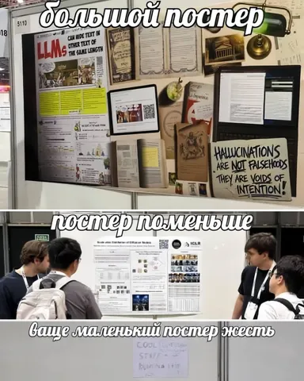

О собаках на постерах и моде на микростенды мы уже писали. Но на конференции были замечены и другие (более серьёзные) тренды, о которых рассказали на Хабре Мария Никифорова, старший разработчик службы качества претрейна YandexGPT, и Дарья Шатько, руководитель ML в Yandex Crowd. Делимся главным.
Агентские системы — везде и всюду
2026-й стал для ICLR годом автономных агентов. Фокус исследований сместился с отдельных моделей на проектирование долгоживущих агентских систем, которые могут планировать на несколько шагов вперёд, выстраивать сложные цепочки зависимых вызовов инструментов, накапливать память и опыт, поддерживать мультиагентность и даже эволюционировать без дообучения базовой модели.
Новые подходы к развитию памяти агентских систем
Простое расширение контекстного окна до миллионов токенов не решило проблему памяти агентских систем. Большая история диалога зашумляет контекст, увеличивает вычислительную сложность и ведёт к деградации качества ответов. На ICLR оформился тренд: агенту нужна управляемая, структурированная память, способная к компрессии и абстрагированию опыта. На конференции было много подходов на эту тему, и среди них можно выделить два особенно интересных. Первый — переход от сырых трейсов к семантическим графам знаний. Второй — многоуровневая компрессия памяти и предсказание пользовательского интента.
Speculative Execution в агентах
Чем автономнее становятся агенты, тем сильнее растёт latency. Если нужно последовательно вызвать несколько инструментов, дождаться ответов, сделать выводы и спланировать следующий шаг, инференс растягивается на десятки секунд. Исследователи предложили перенести фундаментальный принцип спекулятивного выполнения (Speculative Execution) из многопоточных CPU и спекулятивного декодирования LLM на уровень агентской оркестрации.
Интерактивные среды — новый стандарт оценки агентов
Обычные бенчмарки с вопросом и правильным ответом всё хуже отражают реальные способности агентских систем. Агент может ошибиться не только в финальном ответе — он также может выбрать не тот инструмент, плохо спланировать шаги, зациклиться, неправильно понять состояние среды или сломаться из-за изменений интерфейса.
На смену привычным тестам с фиксированным инпутом и golden-ответом пришли динамические платформы, которые изолируют агента в интерактивном окружении и замеряют его живучесть на долгих задачах. В основном исследователи фокусировались на трёх вещах: поведении агента на длинных горизонтах, стратегии сбора информации и устойчивости к изменениям UI и среды.
RL учит поведению, а не ответам
RL для агентских систем перестает быть способом дообучить модель на правильный финальный ответ. Теперь систему учат правильно вести себя в процессе: исследовать среду, пользоваться памятью, выбирать инструменты, общаться с пользователем и не делать лишних действий.
Текстовая диффузия выходит в прод
Ещё недавно Diffusion LLMs воспринимались как необычная альтернатива авторегрессионным LLM, но к ICLR 2026 она уже оформилась в заметное направление. Теперь изучают не то, работает ли это вообще, а более практичные вещи: как масштабировать DLM, при каких режимах обучения они ведут себя лучше авторегрессионных моделей, и в каких задачах не-авторегрессионная параллельная генерация действительно даёт преимущество.
Продолжаем экономить компьют
По мере роста моделей и датасетов эксперименты становятся всё дороже. Исследователи чаще оптимизируют сам процесс разработки: какую смесь данных брать, какие гиперпараметры переносить на большой масштаб, как понять, какие примеры реально повлияли на поведение модели.
На ICLR особенно выделялись два направления: 1) data selection — поиск максимально полезных данных в рамках ограниченных экспериментов, 2) ускорение инференса моделей.
В наш пост уместился только верхенеуровневый рассказ о заметных тенденциях, а в полной статье вы найдёте ещё и структурированную подборку работ по каждой теме.
#YaICLR26
ML Underhood
